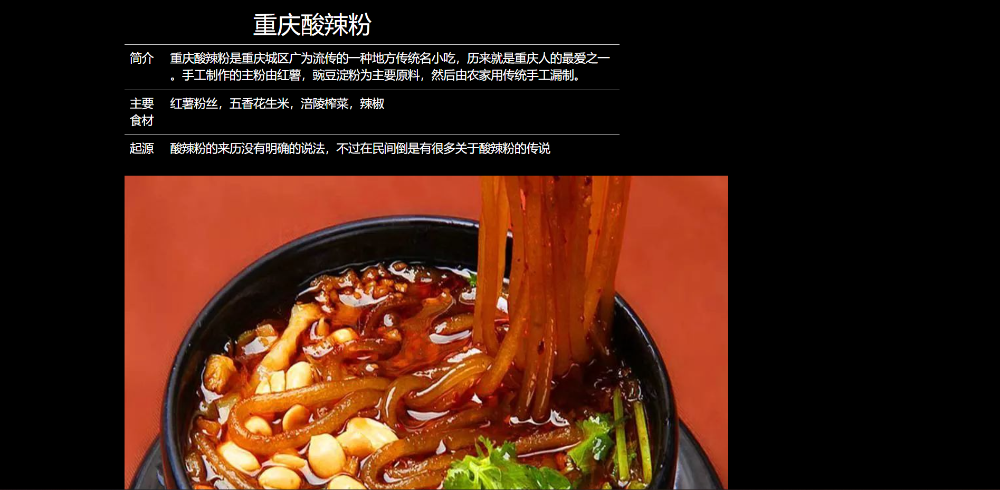

《通信软件开发与应用》课程结业报告
一、做的什么
进行了一个介绍重庆最广为人知的四样美食：重庆酸辣粉，重庆小面，重庆火锅，万州烤鱼的基本信息展示的前端静态网页的制作
二、开发过程
软件使用Visual Studio Code,使用了bootstrap框架，进行了资料的查找，资源的收集和Bootstrap框架的学习，随后在VSCode上进行了代码的撰写，先进行了主界面的编辑，然后写了要介绍的四个界面，然后在主界面通过button标签来添加从主界面到另外四个界面的链接。
三、页面展示

四、遇到的问题
使用bootstrap框架之后，某些自己写的样式中的属性可能会因为冲突而失效。
网页的背景图会因为尺寸问题被切割。
网页的美观存在设计上的不足
网页布局过于单调
五、如何解决
直接不更改，使用bootstrap的属性，查看相关开发文档
在CSS中添加!important
背景可以在CSS中设置background-size: cover来达到强行使图片契合窗口
参阅相关关于网页设计教学的网站
参阅框架的相关开发文档，来了解更多布局和相关知识
六、哪些未解决
bootstrap框架内的CSS属性仍然会与自己写的CSS冲突从而对整个网页的样式设计造成影响
bootstrap框架内的col类和row类仍然不清楚原理，但是其对背景图片造成了切割
七、总结
通过这次大作业和相关课程的学习，我首先是了解了网页web前端开发所需要用到的html，css，JavaScript三个语言，让我对三个语言有了初步的认识，也让我对三个语言的功能和运作原理有了初步认识
在大作业的完成过程中，我也学习了bootstrap框架的安装及使用，同时也是进一步对CSS的理解。
bootstrap是一个非常优秀的前端框架，在这次作业里它大大减少了我在页面布局上所花的时间，row和col对布局的管理十分方便，同时bootstrap自带的其他属性也对网页有一定的美化作用。